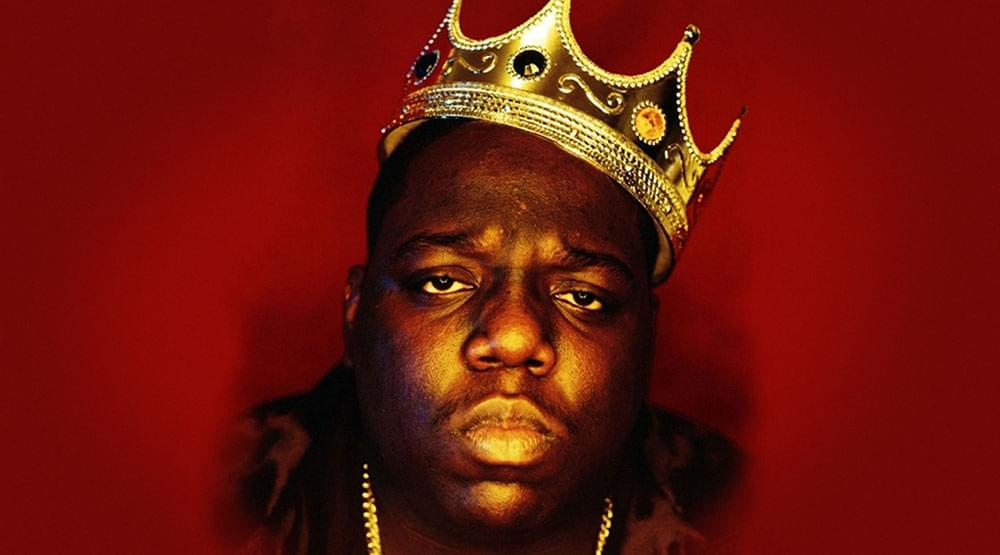

Сейчас в состав Wu-Tang Clan входят 9 самодостаточных МС, но идейным вдохновителем и продюсером команды является RZA («razor» - «бритва»), он же Роберт Фитцджеральд Диггс.
Еще в конце 1980-х годов RZA вместе с кузеном Гэри Грисом по прозвищу GZA («genius» - «гений») и другом Расселом Тайроном Джонсом, известным как Ol’ Dirty Bastard, пытались раскрутить группу Force of the Imperial Master. Процесс шел с трудом, и молодые люди решили сменить направление.
Идея нового проекта пришла американцам во время просмотра фильма «Шаолинь и Удан» (1983), который рассказывает о противостоянии двух школ боевых искусств. Соединение восточной философии и уличной поэзии показалось МС удачным, и они взяли название Wu Tang (англ. «Удан», гора в Китае).
История создания Wu-Tang Clan набирала обороты. К 1992 году, официальной дате образования, коллектив состоял из 10 человек: RZA, GZA, Ol’ Dirty Bastard, а также их друзья – Method Man (Клиффорд Смит), Raekwon (Кори Вудс), Masta Killa (Элгин Тернер), Inspectah Deck (Джейсон Хантер), Ghostface Killah (Денис Коулс), U-God (Лэмонт Хокинс) и Cappadonna (Дэррил Хилл).
Нередко в тени остается одиннадцатый участник Wu-Tang Clan – Mathematics (Рональд Маурис Бин), диджей и продюсер. Ему принадлежат не только музыкальные обработки песен, но и логотип команды, который похож на схематичное изображение орла или сюрикен. На самом деле это буква «W». Сегодня эмблема стала настоящим брендом: украшает одежду, скейтборды и прочее.